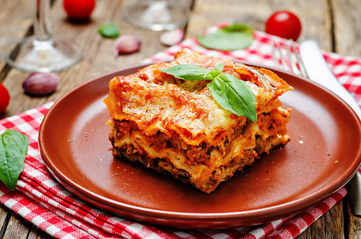

LASAGNA

Description
Lasagna is a wide, flat sheet of pasta. Lasagna can refer to either the type of noodle or to the typical lasagna dish which is a dish made with several layers of lasagna sheets with sauce and other ingredients, such as meats and cheese, in between the lasagna noodles.
Originally, the word lasagna was ussed to describe a pot in which food was being cooked rather than the pasta itself. Lasagna recipes have been around for ages, dating back to as early as the thirteenth century. Today, lasagnas come in all kinds of varieties from veggies and cream sauces to traditional sauce and cheese lasagnas as well as meat lasagnas
Ingredients
- Meat
- Onion
- Canned tomatoes
- Fresh herbs
- Sugar
- Spices and Seasoning
- Noodles
- Cheese
- Eggs
Steps
- Cook the meat: Cook the ground meat in a skillet until browned and crumbly. Add the onion and continue cooking until it's translucent. Stir in the canned tomato products, half of the parsley, garlic, basil, 1.5 teaspoons of salt, oregano, and sugar.
- Cook the noodles: BOil the lasagna noodles in lightly salted water until they're al dente.
- Make the cheese layer: Mix cottage cheese, Parmesan cheese, eggs, the remaining parsley, the remaining salt, and pepper in a bowl.
- Assemble the lasagna: Layer the ingredients according to the recipe (starting with sauce and ending with mozzarella) until the lasagna is assembled.
- Bake the lasagna: Cover with foil and bake in the preheated oven for about half an hour. Remove the foil and continue baking until the top is golden brown.